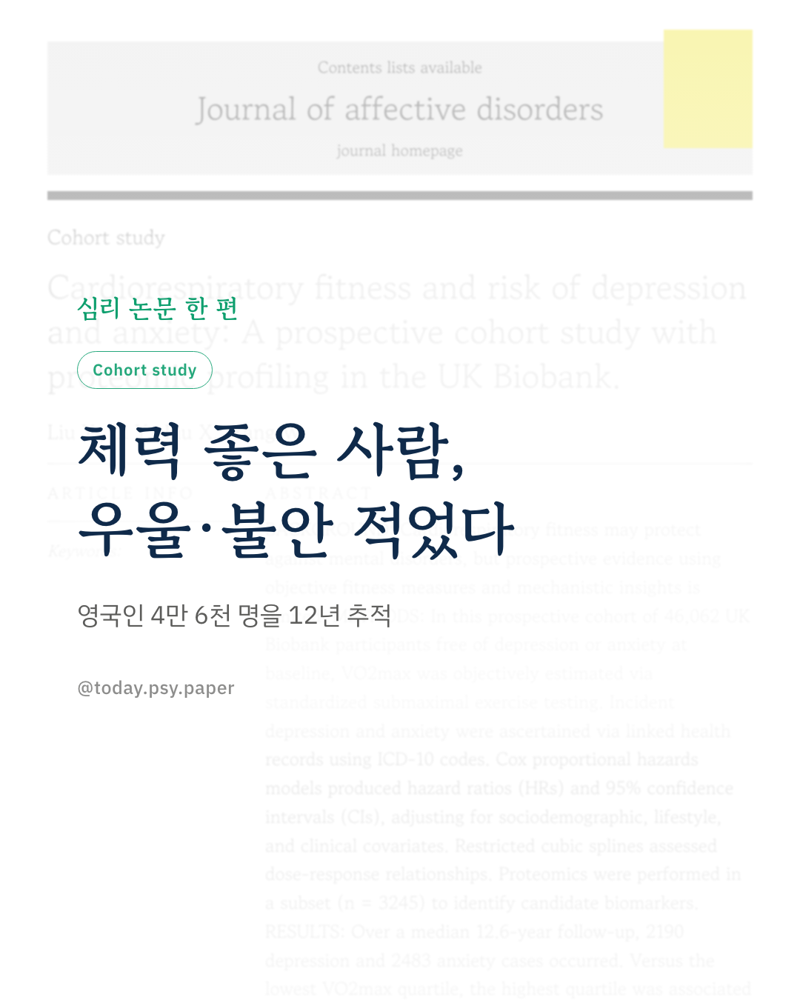
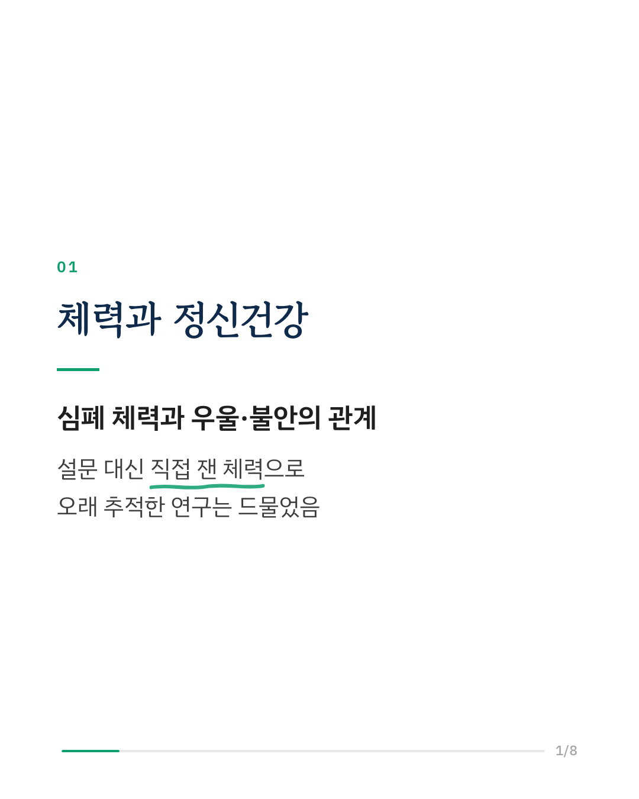
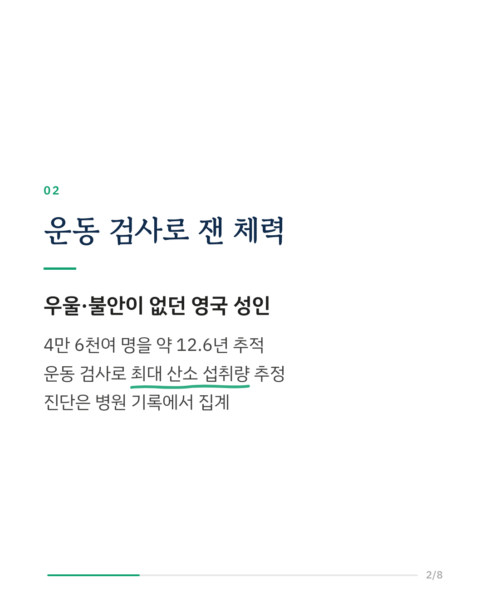
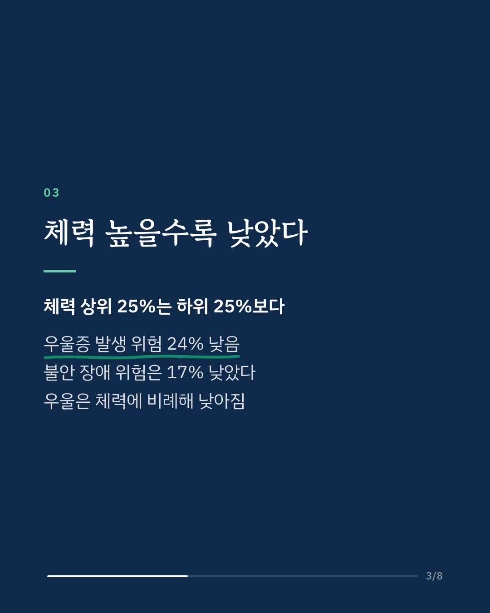
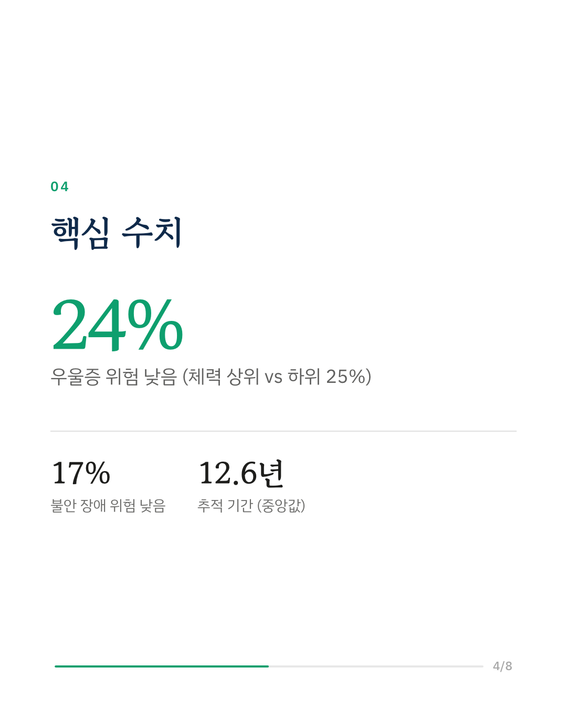
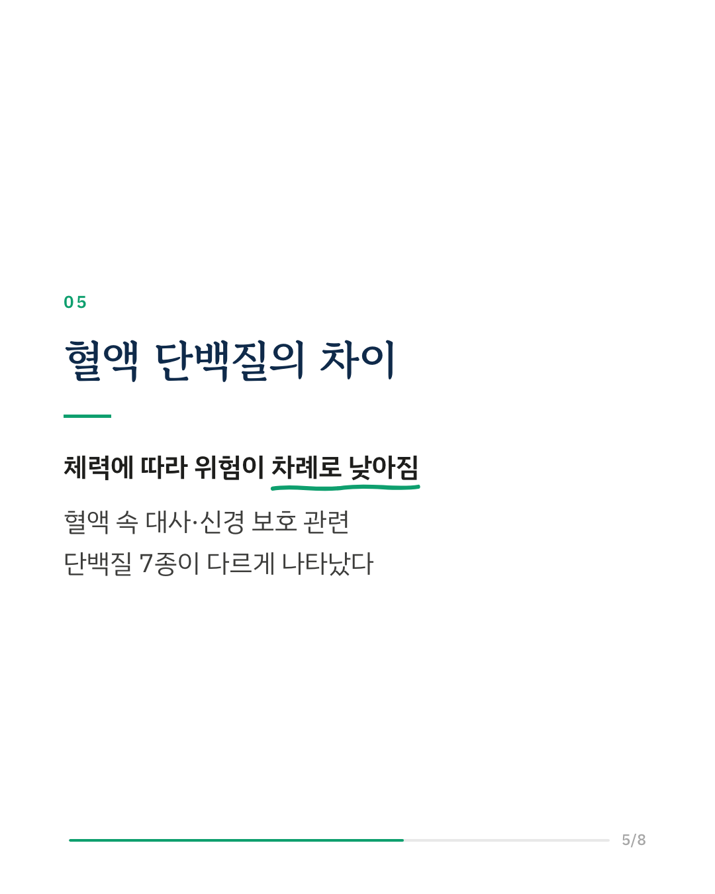
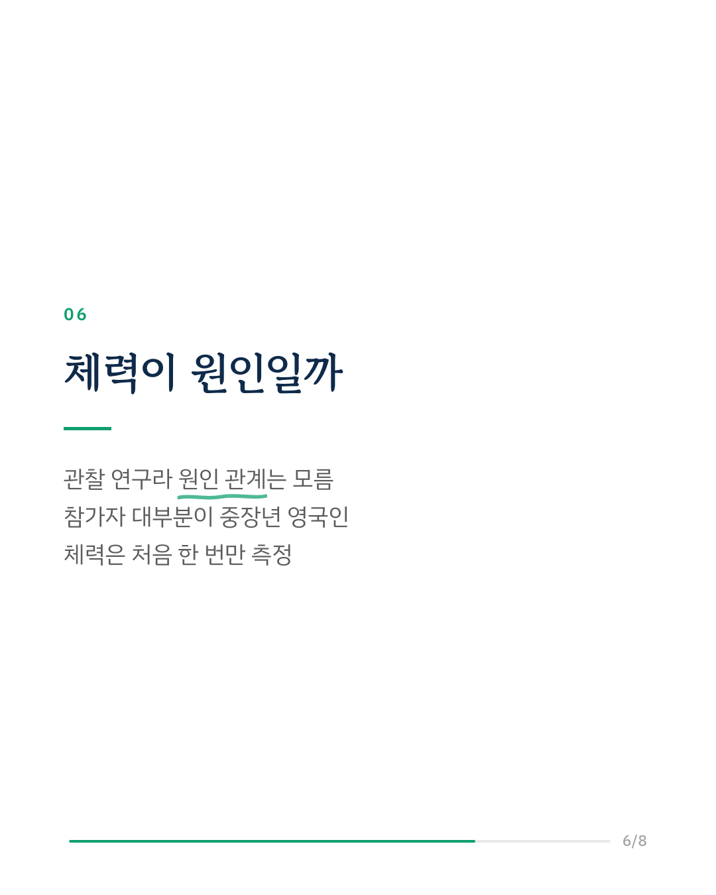
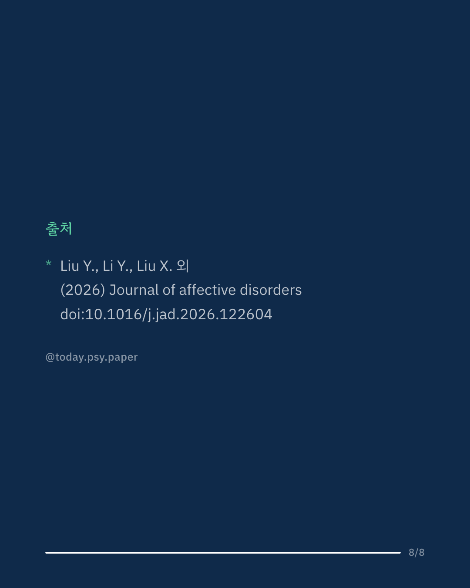

심폐 체력이 높은 사람은 이후 우울증과 불안 장애를 덜 겪을까요? 영국 바이오뱅크 연구진은 처음에 우울·불안이 없던 성인 4만 6천여 명의 체력을 운동 검사로 직접 재고, 약 12.6년 동안 병원 기록을 추적했습니다. 추적 기간 동안 우울증 2,190건, 불안 장애 2,483건이 새로 진단되었습니다. 체력 상위 25%는 하위 25%보다 우울증 위험이 24%, 불안 장애 위험이 17% 낮았습니다. 우울증은 체력이 높을수록 위험이 차례로 낮아지는 모습이었고, 생물학적 나이가 젊은 사람에게서 관련성이 더 뚜렷했습니다. 일부 참가자의 혈액 분석에서는 렙틴 등 대사·신경 보호와 관련된 단백질 7종이 체력에 따라 달랐습니다. 다만 체력을 처음에 한 번만 측정한 관찰 연구여서, 체력이 직접 원인인지는 이 연구로 알 수 없습니다. 출처: Journal of Affective Disorders (2026), 'Cardiorespiratory fitness and risk of depression and anxiety: A prospective cohort study with proteomic profiling in the UK Biobank' DOI: 10.1016/j.jad.2026.122604 #임상심리 #정신건강정보 #심리학연구 #논문리뷰 #우울증 #불안장애 #운동과정신건강 #심폐지구력
python3 publish.py 42849852